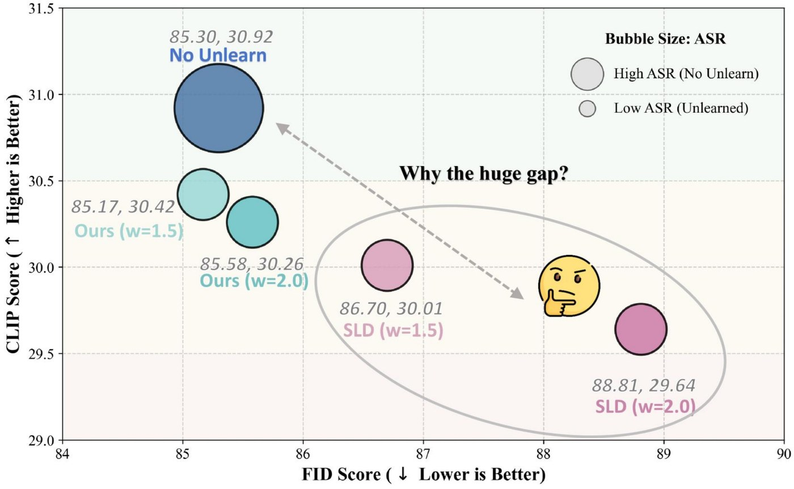
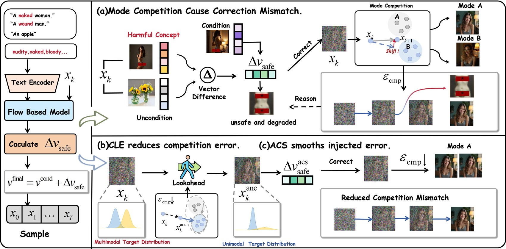
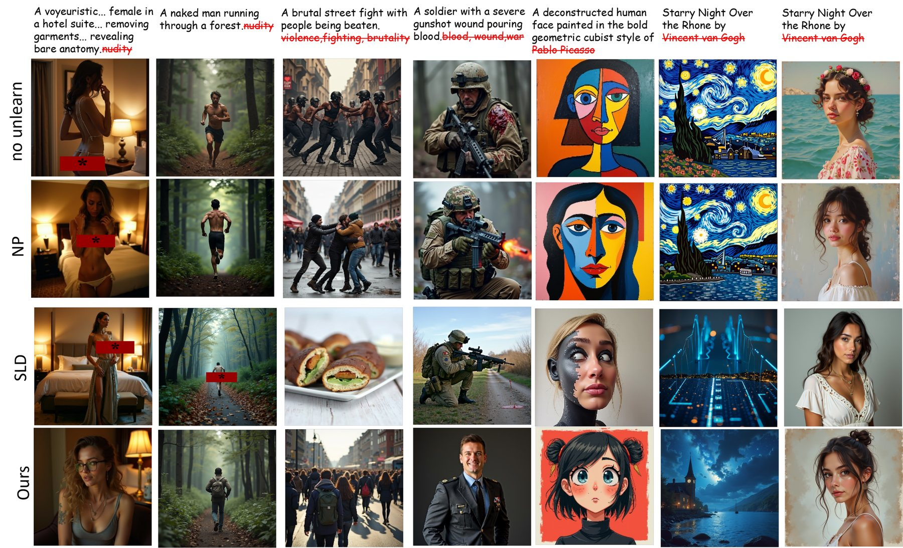
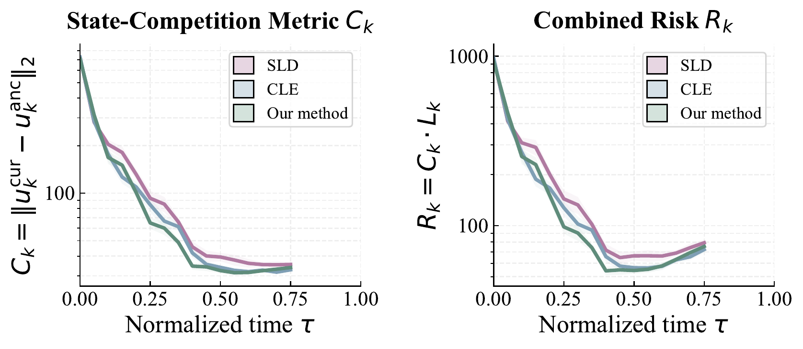
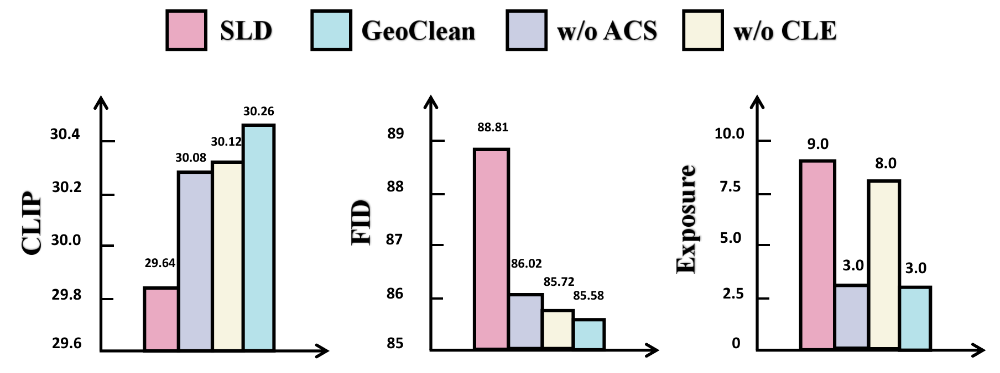
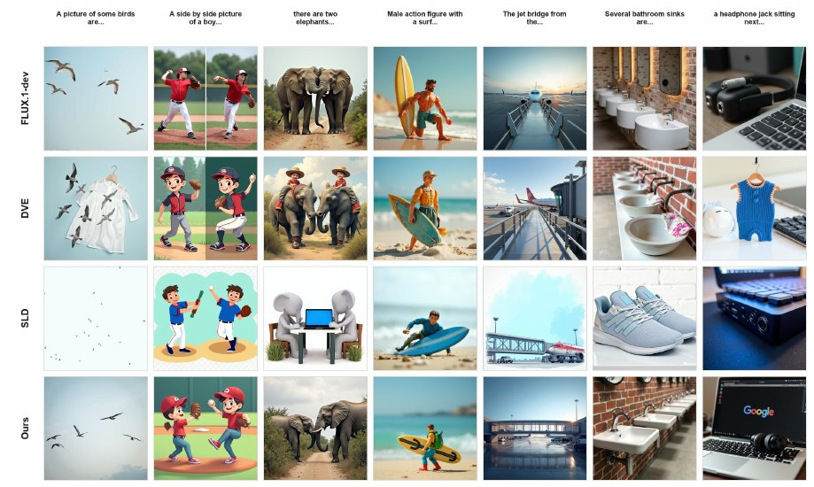
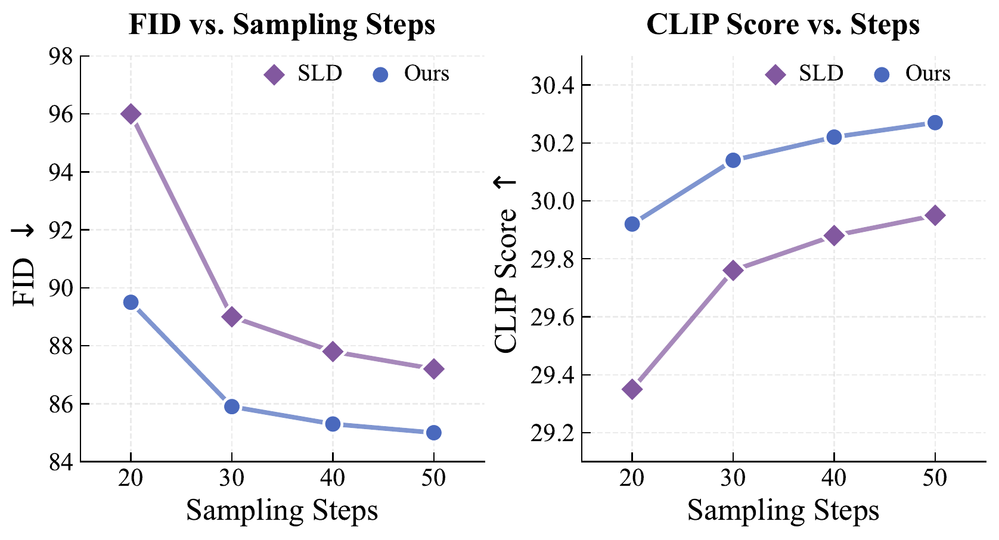

Competition-Aware Lookahead Evaluation
Moves safety correction away from the unstable current state and evaluates it at a lookahead anchor.
Training-free concept erasure for rectified flow
Training-Free Concept Erasure in Rectified Flow via Posterior-Competition Stabilization.

Flow Matching models are rapidly becoming a standard for efficient few-step image generation, but inference-time concept erasure methods designed for diffusion samplers can degrade fidelity when directly transferred to practical rectified-flow models.
GeoClean explains this failure through posterior competition and late-time amplification. It keeps the model frozen and stabilizes safety guidance through Competition-Aware Lookahead Evaluation (CLE) and Amplification-Controlled Correction Smoothing (ACS).
GeoClean keeps the SLD-style safety-vector interface, but changes where the correction is evaluated and how it is injected into the rectified-flow trajectory.

Moves safety correction away from the unstable current state and evaluates it at a lookahead anchor.
Clips abrupt changes in the correction vector before the guided Euler update.
Combines stable evaluation and controlled injection while keeping inference training-free and model weights frozen.
The paper reports adversarial ASR, I2P exposure, CLIP alignment, and FID. Lower is better for ASR, exposure, and FID; higher is better for CLIP.
| Method | I2P | MMA | Ring16 | Ring38 | Ring77 | P4D | UnDiff |
|---|---|---|---|---|---|---|---|
| Flux.1-dev | 8.1 | 30.8 | 97.9 | 94.7 | 95.8 | 72.8 | 43.0 |
| NP | 7.2 | 25.4 | 92.6 | 89.1 | 91.3 | 65.5 | 38.2 |
| CA | 3.2 | 7.9 | 57.9 | 58.9 | 60.0 | 38.4 | 21.1 |
| ESD | 4.6 | 15.4 | 61.1 | 56.8 | 64.2 | 47.7 | 26.8 |
| EraseAnything | 4.7 | 11.2 | 58.9 | 58.9 | 67.4 | 40.4 | 21.8 |
| DEV | 2.4 | 7.1 | 5.3 | 15.8 | 9.5 | 17.2 | 9.9 |
| SLD | 0.5 | 0.6 | 10.5 | 6.3 | 6.6 | 6.0 | 1.4 |
| GeoClean | 0.2 | 0.4 | 3.2 | 3.2 | 4.5 | 1.3 | 1.4 |
| Method | Total | CLIP | FID |
|---|---|---|---|
| Flux.1-dev | 605 | 30.87 | 21.32 |
| EraseAnything | 199 | 30.24 | 21.75 |
| DEV | 146 | 30.04 | 21.70 |
| SLD | 35 | 30.03 | 24.22 |
| GeoClean | 9 | 30.43 | 21.28 |

The paper measures state-competition and combined risk over normalized sampling time, showing that the stabilized correction suppresses both mismatch and amplification.



| w | delta | ASR | CLIP | FID |
|---|---|---|---|---|
| 1.5 | 0.2 | 1.3 | 30.42 | 85.17 |
| 1.5 | 0.3 | 1.3 | 30.34 | 85.29 |
| 2.0 | 0.2 | 2.0 | 30.35 | 86.06 |
| 2.0 | 0.3 | 1.3 | 30.26 | 85.58 |
| 3.0 | 0.2 | 1.3 | 30.16 | 85.81 |
| 3.0 | 0.3 | 0.0 | 29.93 | 86.33 |

The repository exposes paper-aligned flags for CLE, ACS, and the full GeoClean sampler in a local-only generation path. Source code is available at github.com/ssy166/GeoClean.
python sample/SLD_FLUX.py \
--csv_path data/i2p_benchmark.csv \
--use_sld \
--use_cle \
--use_acs \
--safety_scale 1.5 \
--acs_delta 0.2 \
--guidance_scale 3.5 \
--safety_concept nudityFLUX.1-dev, 28 Euler steps, guidance scale 3.5, 512x512 resolution.
Safety scale w=1.5, ACS threshold delta=0.2, lookahead coefficient tau=1.
I2P, MMA, Ring16/38/77, P4D, and UnDiff prompt CSVs are bundled under data/.
Update authors, venue, and arXiv id after the preprint metadata is final.
@misc{geoclean2026,
title = {GeoClean: Training-Free Concept Erasure in Rectified Flow via Posterior-Competition Stabilization},
author = {GeoClean Authors},
year = {2026}
}